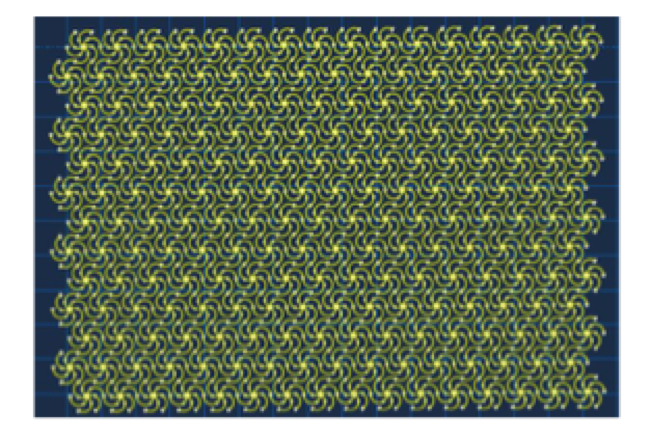
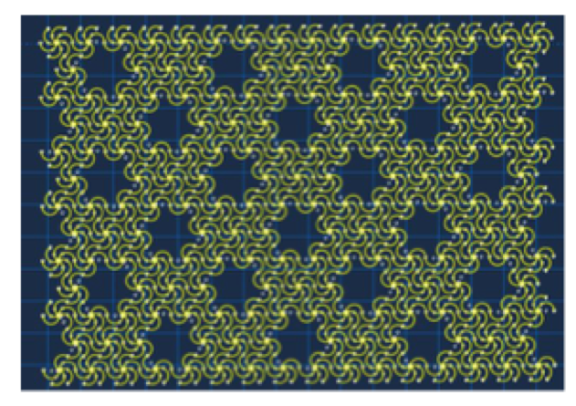
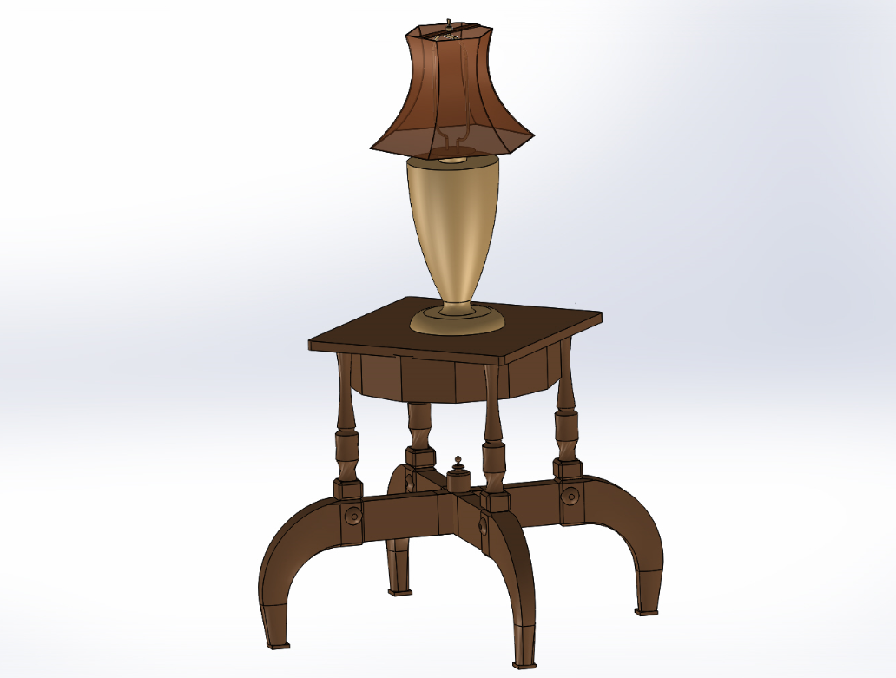
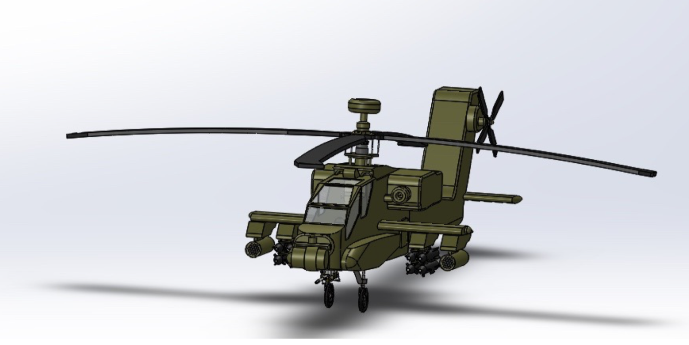

The hardware reliability intern is the role to assist with the design and development of solutions and test equipment for our electromechanical devices and robotic automation products. My project was to develop two GUI applications of the EtherCAT datagram.
The first project (EtherCAT GUI) I created was an assistant tool that was able to create a datasheet for the users. The application can assign entire data to the corresponding signal label for the team to check and analyze. Besides, the user can select the signal that they want to diagnose and the application will calculate the bit and byte value. The user will just need to compare it to the Sycon list to verify the problem.
The second project is the EtherCAT simulator. The simulator application is able to assign each signal to the corresponding label and the simulator provides a two-channel oscilloscope for the team to analyze the signal at a period of timestamp. It could reduce the amount of time for the team to check the data one by one. Moreover, the application has a data browser that is able to find a particular signal that the team wants to diagnose and it will show the number of active packets on the tables. The team will just need to check the packet that is shown on the table. It can make the diagnosis process more efficient.
Undergraduate Research Assistant
I have spent two years in Dr. Cheng's labatory to work on flexible electronics. My first research topic is "Improvement of serpentine networks for crack resistance". Serpentine-shaped structure offers great flexibility in turning their stiffness through changing the characteristic unit. Therefore, I designed two different structures which show in the following and tested their stress-strain response on the mechanical stretching system that I made.
 
Figure: Serpentine networks with and without holes
My second rearch is my senior thesis "The design of a multi-sensing flexible system used for real-time monitoring". I developed a mobile health monitor that only costed $11 and the device can simultaneously collect and send multiple data packets to the mobile application. The more detail could be seen in the Portfolio section.
Lab Assistant
I learned how to use SolidWorks in my freshman year and utilized those skills as a Laboratory Assistant. I assisted the students with design projects, modeling software, and other activities. I had excellent interpersonal communication while teaching. I made two CAD models during my spare time and it can be seen in the following.
 
Figure: Solidworks model.